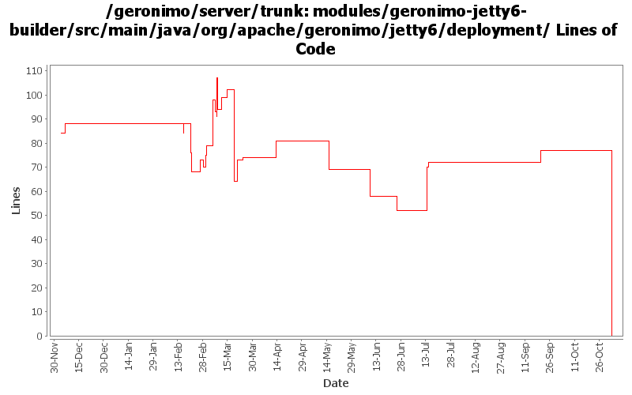

[root]/modules/geronimo-jetty6-builder/src/main/java/org/apache/geronimo/jetty6/deployment

| Author | Changes | Lines of Code | Lines per Change |
|---|---|---|---|
| Totals | 34 (100.0%) | 403 (100.0%) | 11.8 |
| djencks | 26 (76.5%) | 368 (91.3%) | 14.1 |
| sppatel | 2 (5.9%) | 21 (5.2%) | 10.5 |
| vamsic007 | 1 (2.9%) | 5 (1.2%) | 5.0 |
| gdamour | 1 (2.9%) | 5 (1.2%) | 5.0 |
| jgenender | 1 (2.9%) | 4 (1.0%) | 4.0 |
| prasad | 1 (2.9%) | 0 (0.0%) | 0.0 |
| kevan | 2 (5.9%) | 0 (0.0%) | 0.0 |
GERONIMO-3565. Modules distributed amongst framework/modules and plugins
0 lines of code changed in 1 file:
GERONIMO-2964 Cannot specify the Tomcat work directory for a web application
o Committing GERONIMO-2964-trunk.patch submitted in the JIRA
o geronimo-web.xml can now have a "work-dir" tag to specify the work directory to be used by the application.
o For Tomcat this work directory will be relative to "catalina.home"
o For Jetty this work directory will be relative to jetty home which is var/jetty by default.
5 lines of code changed in 1 file:
GERONIMO-3321 um, keep the default jsp mappings too along with all the weird explicit ones
3 lines of code changed in 1 file:
GERONIMO-3321. Pay attention to the weirdo jsp-property-group/url-pattern in the jetty deployer
70 lines of code changed in 1 file:
GERONIMO-1470 make it clearer that our context root settings override those in application.xml
17 lines of code changed in 1 file:
GERONIMO-2687. Don't construct default and run-as subjects, get them from a login module. Also creates a separate server-security-config for the security config stuff you probably want to change. Also fixes lots of security problems, including mdb run-as handling.
3 lines of code changed in 1 file:
GERONIMO-3132 GERONIMO-3165. Fix a bunch of stuff with locating persistence.xml and persistence unit jars. Hook up with openejb for extended persistence contexts
1 lines of code changed in 1 file:
GERONIMO-3154 Implement security for jetty using only spec compliant jacc calls
13 lines of code changed in 1 file:
GERONIMO-3081 use webApp directly, not through AnnotatedApp interface
1 lines of code changed in 1 file:
GERONIMO-3081 Deal with security role and run-as annotations for servlets
7 lines of code changed in 1 file:
GERONIMO-2965 GERONIMO-3008 GERONIMO-3010 Tomcat annotation processing with lots of other improvements. Uses LifecycleProvider interface proposed in GERONIMO-3010
21 lines of code changed in 1 file:
GERONIMO-2949 get the jndi handler outside the context handler: GERONIMO-3000 provide default locale encoding mappings and mimetype mappings: this should fix 2999 for jetty, but I don't know how to test
18 lines of code changed in 1 file:
GERONIMO-2982 Prepend / to path url patterns in servlet mappings if missing. Also some much bigger changes to improve info in exception messages and some genericization
61 lines of code changed in 1 file:
GERONIMO-2958 MyFaces annotation support. Also clean up Module construction and remove unused method from ModuleBuilderExtension
9 lines of code changed in 1 file:
GERONIMO-2687 Some experimental code got into jetty, make it so specifying run-as subject doesn't prevent deployment. (run-as NYI in openejb3, so I don't think its critical to make this part 'work' yet)
6 lines of code changed in 1 file:
port rev 514224 to jetty
65 lines of code changed in 1 file:
GERONIMO-2943 add ModuleBuilderExtensions to web module builders
19 lines of code changed in 1 file:
GERONIMO-2940, GERONIMO-2887 More injection work for app client and jetty: lifecycle methods verified on app client. Ear lib dir available to app client. Also upgrade to jetty snapshot for jetty lifecycle method support
2 lines of code changed in 1 file:
GERONMO-2887 More work to on injections and lifecycle methods
2 lines of code changed in 1 file:
GERONIMO-2934 Create ClassFinder in module builders. This almost certainly has bugs
14 lines of code changed in 1 file:
GERONIMO-2887 put the injections and postCreate and preDestroy info in one object
7 lines of code changed in 1 file:
GERONIMO-2922 - ALlow deployment without web.xml
4 lines of code changed in 1 file:
GERONIMO-2893 Progress towards better annotation support
12 lines of code changed in 1 file:
GERONIMO-2827 some ee5 app client support: no dd required and some injection support. Also better support for no dd in ears, and help ejb module builder not object if its given a non-ejb module. Also refactor some naming builder stuff
2 lines of code changed in 1 file:
GERONIMO-2887 Start hooking up injection for jetty
6 lines of code changed in 1 file:
GERONIMO-2837 annotation processing first step
0 lines of code changed in 1 file:
GERONIMO-2816 related. Move the NamingBuilder.buildEnvironment late enough so a classloader is available for help with annotation procesing. Intermediate patch to coordinate work.
2 lines of code changed in 1 file:
actually only continue building module without web.xml if module name is *.war
5 lines of code changed in 1 file:
squash exception and continue processing webbuilder if no web.xml
16 lines of code changed in 1 file:
* Move to 2.0M3-SNAPSHOT version of WADI dependencies;
* Migrate BasicWADISessionManager to new WADI API;
* Move GBean definition of the session timeout before the clustering
configuration such that clustering builders can retrieve this
session timeout;
* Add Session.onEndAccess contract. This is a notification of the
session performed by clients when they are done with their
data accesses. Implementations can implement this method to queue a
replication; and
* Honor David J.'s TODOs in ClusteredSessionManager.
This fixes GERONIMO-2669 fix o.a.g.j.ClusteredSessionManager to match
changes in Jetty AbstractSessionManager
5 lines of code changed in 1 file:
GERONIMO-2656 trim servlet-mapping url-patterns
1 lines of code changed in 1 file:
GERONIMO-2631 parameterize the jsp servlet class name
6 lines of code changed in 1 file:
GERONIMO-2537 Fix notices and src headers in recent jee5 updates. Update Web Console notice.txt w/ ibm donation information, add copyright to assembly notice files, and remove ASF v 1.1 license from source borrowed from xerces project
0 lines of code changed in 2 files: